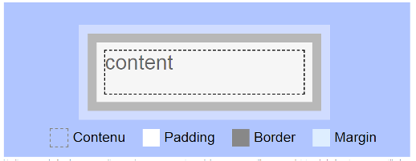
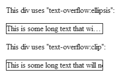
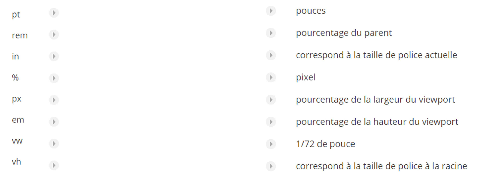

CSS
- Les bases -
> Le CSS késako ?
Un langage Web
Le CSS (pour Cascading Style Sheets) est un langage de "programmation" utilisé pour décrire l'apparence d'une page écrite dans un langage markup comme le HTML (d'autres langages, tels le SVG peuvent aussi avoir leurs feuilles de style).
Tout d'abord, faisons la chasse à un préjugé : « Le CSS, ce n'est pas simple. »
Dans la mesure où le CSS ne permet pas de faire d'algorithmes, il est souvent perçu comme un langage facile à utiliser, et donc un langage facile. Mais il s'agit de deux choses différentes : n'importe qui peut écrire une feuille de style, mais écrire la feuille de style répondant à la charte graphique fournie par votre graphiste nécessite une connaissance des propriétés et du fonctionnement de CSS. Et ça n'est pas si simple que ça.
Un langage web
CSS, c'est :
- Plus de 300 propriétés, et des nouvelles l'enrichissent régulièrement.
- Une infinité de déclarations possibles par sélecteurs.
- Une infinité de sélecteurs possibles par élément du DOM.
- une infinité d'éléments du DOM ciblables par sélecteur.
Un langage web
Bien évidemment, ce n'est pas parce qu'une infinité de sélecteurs peuvent exister pour un élément qu'il faut tous les utiliser, bien au contraire, mais on retrouve fréquemment dans nos applications des erreurs dues aux propriétés mentionnées ci-dessus :
Un langage web
- propriétés inutiles (qui ne s'appliquent pas à l'élément ciblé, ou qui sont surchargées par ailleurs),
- même sélecteur figurant dans différents fichiers / endroits de notre feuille de style,
- plusieurs sélecteurs pour styler le même élément (avec le risque de ne pas comprendre lequel est utilisé et de finir par utiliser l'honni "!important"),
- des sélecteurs définis de façon trop peu précise et qui modifient l'apparence d'éléments non voulus.
Un langage web
Dans nos projets, on écrit beaucoup de CSS, probablement trop, sans trop comprendre comment l'utiliser.
Ce premier module couvrira les bases du CSS : à quoi ça ressemble, comment il s'ajoute dans une application, sur une page, à quoi il peut s'appliquer. Nous définirons ce qu'est un sélecteur. Nous étudierons la cascade des styles pour déterminer quel sélecteur s'applique à quel élément du DOM.
Un langage web
Des liens intéressants à garder en marque-page seront fournis tout du long, n'hésitez pas à les conserver.
Un premier lien : l'index CSS du CSS working group du W3C qui liste toutes les propriétés, leurs valeurs, la grammaire utilisée pour appeler leur valeur (moins utile), les fonctions, les règles @ et les sélecteurs du langage qui sont référencés dans une spécification CSS du W3C. Et ça en fait beaucoup.
> A quoi ça ressemble ?
Ca ressemble à quoi, le CSS ?
Le CSS, ça ressemble à ça :
Ca ressemble à quoi, le CSS ?
Ici, on a décrit la classe CSS appelée "quality-box", qui a pour propriétés une largeur faisant 20% de son conteneur parent auquel on retirera 20 pixels, des marges de 10 pixels de chaque côté, et un affichage de type inline-block, à savoir gardant les propriétés de l'affichage block tout en s'affichant à la droite de l'élément inline qui le précède (là où un élément block se positionnerait en dessous).
Ces propriétés seront étudiées dans un module ultérieur.
Comment appliquer cette classe à ma page ?
Comme ça :
Comment appliquer cette classe à ma page ?
Sur l'élément HTML div, on ajoute l'attribut class et la valeur vaut la ou les classes qu'on souhaite appliquer. A noter : une classe commence par un point dans le fichier de style, mais on ajoute son nom sans le point dans l'attribut class.
Dans le cas où vous travaillez avec React en JSX, class étant un mot JS réservé, l'attribut à utiliser est className.
Si vous utilisez des CSS modules, la valeur de l'attribut className vaut le nom que vous avez choisi quand vous avez importé votre CSS. Ce dernier point sera traité dans la formation CSS avancé, activité CSS Modules.
Sur quels éléments ai-je le droit d'ajouter une classe ?
Il est possible d'ajouter une classe sur la majorité des éléments du DOM ayant une représentation graphique (n'allez pas mettre de classe sur la balise script s'il vous plait).
Ainsi, l'ensemble des balises HTML est concerné, mais aussi SVG.
Petit rappel : le HTML a été enrichi à l'occasion d'HTML5 (vous en avez probablement entendu parler) de balises appelées balises sémantiques. Là où des balises comme div ou span sont agnostiques (on y met le contenu qu'on veut), de nouvelles balises plus précises sont nées telles que :
header / nav / article / aside / footer
Sur quels éléments ai-je le droit d'ajouter une classe ?
En passant : si div et span sont agnostiques quant à leur contenu, il existe une règle méconnue : on ne met pas de div dans un span.
- div est fait pour afficher un bloc de contenu.
- span est fait pour afficher du texte de façon linéaire.
Les propriétés CSS des feuilles de style des navigateurs traduisent ce fait : les div sont en display: block, les span en display: inline par défaut.
N'allez donc pas mettre un bloc dans une balise faite pour du texte s'il vous plait.
> Inclure le CSS
Présentation
Les styles CSS (la définition des classes et leurs propriétés associées) peuvent exister à de multiples endroits :
- Au sein de la page dans une balise style. On parle de styles embedded.
- Au sein de la page, dans l'attribut style d'un élément du DOM. On parle de styles inline.
- Au sein d'une feuille de style, qui sera importée dans la page.
Présentation
Il est fortement déconseillé d'utiliser des styles embedded ou inline !
En effet, cela cause des problèmes de maintenabilité (avec du code déporté sur les pages), de compréhension (les styles inline sont prioritaires, on le verra plus tard dans ce module).
Néanmoins, dans certains cas très spécifiques, il est possible que vous ayez à utiliser des styles inline : notamment dans le cas de composants JS où le style appliqué dépend directement de la valeur d'une variable JS (il est possible sinon d'utiliser une custom property cependant, mais cela fera partie du module CSS avancé, sans compter que l'utilisation de custom properties est conditionnée à leur compatibilité avec le navigateur, par exemple, pas IE11).
Le style embedded
On peut voir ici une balise HTML style dans lequel le code CSS est ajouté. Petit rappel : n'utilisez JAMAIS de CSS embedded.
Le style inline
On peut voir l'attribut style sur la balise body. A éviter également, à n'utiliser que si on a des styles variables sans la possibilité d'utiliser des custom properties CSS.
Les feuilles de style
et dans un fichier appelé ici mes-styles.css :
Les feuilles de style
Le principe est de mettre toutes les définitions de style au sein de feuilles de style, des fichiers séparés, qui sont importés dans la page par l'utilisation de la balise link avec l'attribut rel valant stylesheet (la balise link sert à importer des fichiers externes, l'attribut rel à définir la relation que ce fichier aura avec la page, et la valeur stylesheet à mentionner que le fichier est un fichier de style).
Les styles conditionnels
Enfin, il est possible d'avoir des feuilles de style conditionnelles pour les version d'Internet Explorer < 10.
Cela permet de charger des styles supplémentaires dans le cas où l'on répond aux conditions fournies. On peut importer une feuille de style de façon conditionnelle de cette façon :
Les styles conditionnels
notez le commentaire conditionnel:
> Les selecteurs
Qu'est-ce qu'un sélecteur CSS ?
Un sélecteur CSS, c'est la chaîne permettant de cibler les éléments du DOM qui seront concernés par les styles définis.
le sélecteur est « ul > li.title »
Il signifie qu'on ciblera uniquement les éléments li qui sont les enfants directs d'un élément ul, et qui ont l'attribut class contenant la valeur title.
Les sélecteurs élémentaires
| Motif | Description |
|---|---|
| * | cible n'importe quel élément de la page. Dans les faits on s'en sert pour définir les valeurs par défaut appliquées sur la page, telles la couleur de base et/ou la taille de base de la police. |
| B | correspond à une balise du DOM (par exemple div ou span ou ul ou table ou svg). Sans plus de précision, toutes ces balises seront concernées par les styles associés. |
| .warning | Ici on définit une classe CSS, du nom de warning. La définition d'une classe CSS commence par un point. Son utilisation sur la page se fait sans le point (par exemple, on aurait ici <div class="warning">. Tous les éléments du DOM dont l'attribut class contient le nom de la classe sont ciblés. |
| #myid | Ici, on cible un identifiant donné. Tout élément du DOM peut se voir attribuer un identifiant, sous la forme <div id="myId">. Dans la feuille de style, on peut cibler l'élément ayant un identifiant donné en le préfixant de #. Petit rappel : un identifiant doit être unique sur l'intégralité de la page. |
Qu'est-ce qu'un sélecteur CSS ?
Pour toute la suite, on utilisera E (pour Elément) comme base sur laquelle on applique les différentes variantes de sélecteurs : il s'agit ici d'une facilité d'écriture, et dans toute la suite, E peut être remplacé par n'importe quel sélecteur. Les types de sélecteurs décrits peuvent s'appliquer à tout sélecteur, pas uniquement aux éléments du DOM.
Si vous lisez E:first-child, cela peut vouloir dire "div:first-child", comme cela pourrait être ".warning:first-child" (qui veut dire un élément possédant l'attribut class ayant pour valeur "warning" et qui est le premier enfant de son parent) ou "ul.ma-liste > li.mon-item:first-child". Si une balise doit être utilisée explicitement pour la règle, cela sera mentionné dans la description (par exemple pour :nth-of-type).
Les sélecteurs sur attributs
Il est possible de cibler des éléments en fonction des attributs existant sur la balise du DOM, voire de leurs valeurs
| Motif | Description | Exemples |
|---|---|---|
| E[foo] | Un élément E du DOM ayant l'attribut foo qu'il ait une valeur ou non. | <div data-focus="test"> ou <div data-focus> seront ciblés par div[data-focus] |
| E[foo="bar"] | Un élément E du DOM dont l'attribut foo a pour valeur bar. | <div data-focus="test"> sera ciblé par div[data-focus="test"] |
Les sélecteurs sur attributs
| E[foo~="bar"] | Un élément E du DOM dont l'attribut foo est une liste de valeurs séparées par un espace, dont l'une a pour valeur bar. | <div data-focus="test"> et <div data-focus="test item "> seront ciblés par div[data-focus~="test"] |
| E[foo^="bar"] | Un élément E du DOM dont l'attribut foo commence par bar. | <div data-focus="testdecomposant"> et <div data-focus="test"> seront ciblés par div[data-focus^="test"] |
| E[foo$="bar"] | Un élément E du DOM dont l'attribut foo termine par bar. | <div data-focus="pasuntest"> et <div data-focus="test"> seront ciblés par div[data-focus$="test"] |
Les sélecteurs sur attributs
| E[foo*="bar"] | Un élément E du DOM dont l'attribut foo contient bar. | <div data-focus="pasuntest">, <div data-focus="testdecomposant">, <div data-focus="ceciestuntestdecomposant"> et <div data-focus="test"> seront ciblés par div[data-focus*="test"] |
| E[foo|="bar"] | Un élément E du DOM dont l'attribut foo vaut bar ou commence par bar suivi d'un tiret | <div data-focus="test"> et <div data-focus="test-composant"> seront ciblés par div[data-focus|="test"] mais pas <div data-focus="test test2"> ni <div data-focus="testcomposant"> |
Les pseudo-classes
Ne sont pas des classes. Il s'agit d'une syntaxe permettant de cibler certains éléments en fonction de caractéristiques qui ne peuvent pas être déduites du DOM comme leur état ou leur "ordre". Cela permet d'ajouter plus de précision sur les sélecteurs.
| Motif | Description |
|---|---|
| :root |
Permet de cibler la racine du document. S'utilise uniquement sous la forme :root
{ /* styles */ } sans spécifier d'élément, la racine étant la racine.
On s'en sert souvent pour donner les valeurs par défaut des custom
properties (que l'on verra ultérieurement).
|
Les pseudo-classes
| Motif | Description |
|---|---|
| E:first-child | Permet de cibler un élément E qui est le premier enfant de son parent, tous types confondus. |
| E:nth-child(n) | Permet de cibler un élément E qui est le n-ième enfant de son parent, tous types confondus. n est un entier. |
| E:nth-last-child(n) | Permet de cibler un élément E qui est le n-ième enfant de son parent en partant de la fin, tous types confondus. n est un entier. |
| E:last-child | Permet de cibler un élément E qui est le dernier enfant de son parent, tous types confondus. |
| E:only-child | Permet de cibler un élément E s'il est l'enfant unique de son parent, tous types confondus. |
Les pseudo-classes
| Motif | Description |
|---|---|
| E:first-of-type | Permet de cibler un élément E qui est le premier enfant de son parent, pour le type fourni (E doit contenir une balise à laquelle :first-of-type s'applique). |
| E:nth-of-type(n) | Permet de cibler un élément E qui est le n-ième enfant de son parent, pour le type fourni (E doit contenir une balise à laquelle :nth-of-type s'applique). n est un entier. |
| E:nth-last-of-type(n) | Permet de cibler un élément E qui est le n-ième enfant de son parent en partant de la fin, pour le type fourni (E doit contenir une balise à laquelle :nth-last-of-type s'applique). n est un entier. |
| E:last-of-type | Permet de cibler un élément E qui est le dernier enfant de son parent, pour le type fourni (E doit contenir une balise à laquelle :last-of-type s'applique). |
| E:only-of-type | Permet de cibler un élément E s'il est l'enfant unique de son parent, pour le type fourni (E doit contenir une balise à laquelle :only-of-type s'applique). |
Les pseudo-classes
Comme on peut le voir, on a des instructions très proches, avec une différence qui est le "type".
Si on utilise la version "-child", on comptera tous les enfants.
Si on utilise la version "-of-type", on comptera uniquement les enfants du type fourni avant la pseudo-classe.
Dans les deux cas, si l'enfant correspondant à l'indication est du type qu'on a fourni avant la pseudo-classe, le style sera appliqué, sinon il ne le sera pas.
Les pseudo-classes

Les pseudo-classes
| Motif | Description |
|---|---|
| E:empty | Permet de cibler un élément E qui n'a aucun enfant ni contenu. |
| E:link | Permet de cibler un élément E qui est un lien dont la cible n'a pas encore été visitée. |
| E:visited | Permet de cibler un élément E qui est un lien dont la cible a été visitée. |
| E:active | Permet de cibler un élément E qui est actif (généralement, sur lequel on clique). |
| E:hover | Permet de cibler un élément E au-dessus duquel le pointeur flotte. |
| E:focus | Permet de cibler un élément E qui "ciblé" (typiquement un champ de saisie dans lequel on a cliqué). |
Les pseudo-classes
| Motif | Description |
|---|---|
| E:target | Permet de cibler un élément E qui est la cible d'une URL (par exemple une ancre). |
| E:lang(fr) | Permet de cibler un élément E pour le langage spécifié (l'attribut lang="/* la langue */" peut être ajouté à des éléments HTML). |
| E:enabled | Permet de cibler un élément E qui n'est pas désactivé (sert surtout en relation avec la pseudo-classe suivante). |
| E:disabled | Permet de cibler un élément E qui est désactivé (si on a un input qui ne doit pas être actif / qui n'est actif que dans certains états de la page, on peut lui ajouter l'attribut disabled, et cette pseudo-classe permet de le cibler). |
| E:checked | Permet de cibler un élément E qui est coché (radio-bouton ou checkbox). |
| E:not(s) | Permet de cibler un élément qui ne correspond pas au sélecteur s (s est un sélecteur écrit sans guillemets l'encadrant). |
Les pseudo-éléments
Les pseudo-éléments offrent accès à de l'information ou de contenu qui n'est pas directement accessible par le DOM; Par exemple, on pourra ajouter un élément non présent dans le DOM avec ::before ou ::after (les deux pseudo-éléments les plus importants car permettant de faire beaucoup, beaucoup de choses).
| Motif | Description |
|---|---|
| E::first-line | Permet de cibler la première ligne d'un texte dans l'élément E. |
| E::first-letter | Permet de cibler la première lettre d'un texte dans l'élément E. |
| E::before | Permet de cibler du contenu généré supplémentaire situé avant les enfants de l'élément E dans le DOM. |
| E::after | Permet de cibler du contenu généré supplémentaire situé après les enfants de l'élément E dans le DOM. |
Les pseudo-éléments
::before et ::after peuvent paraître un peu vague, il est utile de comprendre ce qu'ils font pour les utiliser.
Comme on peut le voir ci-dessus, ::before et ::after permettent d'accéder à deux couches de contenu / de style supplémentaires pour un élément donné. Ils seront affichés derrière le contenu de l'élément, mais devant l'élément (la box) lui-même.
Pour que ces couches soient affichées, elles doivent avoir l'attribut CSS content avec une valeur non nulle !
Quelques exemples : https://codepen.io/c3dr0x/full/ExXMNRZ

Les combinaisons
Après avoir vu tous ces sélecteurs, reste encore à les mélanger !
| Motif | Description |
|---|---|
| E F | Permet de cibler tout élément F descendant d'un élément E quel que soit le degré de profondeur ! |
| E > F | Permet de cibler tout élément F directement enfant d'un élément E. |
| E + F | Permet de cibler un unique élément F directement précédé dans le DOM d'un élément E et frère de cet élément E. |
| E ~F | Permet de cibler tout élément F précédé dans le DOM d'un élément E et frère de cet élément E. |
| .style1.style2 | Lorsque 2 classes CSS sont collées, on cible tout élément dont l'attribut classe contient les deux valeurs (l'ordre n'importe pas) |
Les combinaisons
On obtient des sélecteurs du genre :
- .c-employee-picture > div span:last-child : tout élément span étant le dernier enfant de son parent, inclus dans un div (potentiellement à plusieurs niveaux de parenté) qui est le descendant direct d'un élément donc la classe vaut "c-employee-picture"
- form[data-loading='true'] [data-focus='panel']::after : le pseudo-élément after d'un élément dont l'attribut data-focus vaut "panel", descendant (potentiellement à plusieurs niveaux de parenté) d'un formulaire dont l'attribut data-loading vaut "true«
Les combinaisons
Voilà pourquoi il est important de bien définir ses sélecteurs ! Mal définis, on prend le risque d'avoir des sélecteurs ciblant trop d'éléments; ou trop longs, ou difficiles à surcharger (le deuxième exemple ici est une surcharge d'un style de Focus2).
Les combinaisons
Bon, ça c'est pour vous faire peur : dans les faits, les sélecteurs ressembleront plus à :
- .c-dashboard-item--selected : l'élément ayant la classe "c-dashboard-item--selected". Ce sélecteur répond à la norme BEM dont on parlera dans le module "les préprocesseurs, et la pratique"
- .c-btn:hover : pour définir le comportement au hover d'un élément dont la classe est "c-btn" (un bouton, étonnamment)
Il est conseillé d'éviter d'avoir des sélecteurs trop complexes : généralement une classe suffit. Ces considérations seront plus développées dans le module "les préprocesseurs, et la pratique".
> La priorité des sélecteurs
Présentation
Nous avons vu dans l'activité précédente qu'il existe une grande quantité de sélecteurs.
Nous avons aussi vu qu'il est possible d'avoir ses styles à différents endroits : embedded dans la page, inline dans l'attribut style, ou dans une feuille de style séparée.
Enfin, il faut savoir que les navigateurs disposent de leur propre feuille de style interne (pour contenir les affichages par défaut des différents éléments) et qu'il est possible (avec certains plugins) d'ajouter une feuille de style personnelle à une page.
Dans tous ces styles, si des sélecteurs concernent un même élément, quel style a la priorité ?
L'interdit !important
Avant de commencer, il faut connaitre !important. Il s'agit d'une directive permettant de forcer l'utilisation d'une propriété donnée même si le sélecteur n'est pas prioritaire et que la même propriété est définie dans un style prioritaire. Pour l'utiliser :
L'interdit !important
Si on dispose d'un élément ayant les styles "ma-classe" et "ma-surcharge", en temps normal, on applique le style qui possède les deux déclarations. Cependant, du fait de l'utilisation de !important, c'est la couleur rouge qui apparaitra, mais le texte fera bien 24px;Il est extrêmement déconseillé d'utiliser !important. Le seul moyen de surcharger un style utilisant !important est d'ajouter un style prioritaire utilisant !important.
Bref, en utiliser un, c'est prendre le risque de les voir se multiplier et de devoir mettre des !important partout.
La priorité des styles en fonction de leur origine
A spécificité égale, les styles utilisés seront (en premier ceux qui seront utilisés) :
- Les !important définis par l'utilisateur dans sa feuille de style personnelle
- Les !important définis dans les styles du site
- Les styles définis dans le site
- Les styles de la feuille personnelle de l'utilisateur
- Le styles du navigateur
La priorité des styles en fonction de leur origine
Attention, Si un même sélecteur ou un sélecteur de même spécificité est défini plusieurs fois dans une feuille de style, le dernier (dans l'ordre de chargement des styles) l'emporte
Les spécificités
Le sélecteurs CSS possèdent chacun une spécificité, un indicateur de précédence permettant de déterminer quel style doit s'appliquer. Les règles ci-dessous sont valides : soit entre éléments disposant tous de !important, soit entre éléments n'ayant pas la directive !important.
Si une propriété a !important, elle s'appliquera avant toute autre valeur n'en disposant pas. Si plusieurs ont la directive !important, il faudra comparer leur sélecteur comme pour le cas où il n'y a pas !important.
Les spécificités
Sont prioritaires :
- A : Les styles inline
- B : Les sélecteurs utilisant un identifiant (le nombre d'identifiants détermine la priorité)
- C : Les sélecteurs contenant des classes, pseudo-classes et attributs (on compte le nombre de classes, pseudos-classes et attributs pour déterminer la priorité, le plus haut est plus prioritaire)
- D : Les sélecteurs ayant des éléments ou des pseudo-éléments (on compte le nombre d'éléments et pseudo-éléments pour déterminer la priorité, le plus haut est le plus prioritaire)
Les spécificités
| Sélecteur | A | B | C | D | Commentaire |
|---|---|---|---|---|---|
| * | 0 | 0 | 0 | 0 | Le sélecteur * n'a aucune spécificité |
| li | 0 | 0 | 0 | 1 | Un unique élément |
| li::first-line | 0 | 0 | 0 | 2 | Un unique élément et un unique pseudo-élément : ce sélecteur sera prioritaire sur le précédent |
| ul li | 0 | 0 | 0 | 2 | Deux éléments : ce sélecteur a la même spécificité que le précédent : le dernier dans le fichier sera prioritaire |
| ul ol+li | 0 | 0 | 0 | 3 | Trois éléments : prioritaire sur les styles précédents |
| h1 + [rel="up"] | 0 | 0 | 1 | 1 | Un attribut, un élément : la présence d'un attribut donne la priorité à ce sélecteur sur tous les précédents |
Les spécificités
| Sélecteur | A | B | C | D | Commentaire |
|---|---|---|---|---|---|
| ul ol li.red | 0 | 0 | 1 | 3 | Une classe, trois éléments : le compteur de classes/attributs est égal au sélecteur précédent, mais il y a plus d'éléments, ce style sera prioritaire sur le précédent |
| ul ol li:not(.red) | 0 | 0 | 1 | 3 | Attention : la pseudo-classe :not a une spécificité de 0. Cependant tous les sélecteurs à l'intérieur comptent pour la spécificité du sélecteur. Donc ici, une classe, 3 éléments : pareil que le précédent |
| li.red.level | 0 | 0 | 2 | 1 | Deux classes, un élément. Prioritaire sur tous les précédents |
Les spécificités
| li:not(.red.level.something) | 0 | 0 | 3 | 1 | Il s'agit d'un hack commun utilisé pour surcharger des styles : on peut cumuler autant de classe qu'on le souhaite dans :not pour monter la spécificité de notre sélecteur. A connaitre, mais à éviter, de préférence |
| #monId | 0 | 1 | 0 | 0 | Un identifiant, donc prioritaire à tous les précédents |
| <div style="color: red;"> | 1 | 0 | 0 | 0 | Les styles inline sont prioritaires |
> Exercices
Exercice 1
(identifiant ; classes/pseudo-classes/attributs ; éléments/pseudo-éléments)
- => 0 ; 5 ; 4
- => 0 ; 4 ; 4
- => 0 ; 4 ; 5
- => 1 ; 4 ; 5
- => 0 ; 5 ; 5
- Identifiants : pas d'identifiants ici, => donc 0
- Classes, pseudo-classes et attributs : .test, [data-focus="stuff"], :first-child et :hover => soit 4
- Eléments et pseudo-éléments : div, ul, li, li encore et ::after soit 5
Exercice 2
Classez les sélecteurs par ordre de spécificité : le sélecteur à la plus haute spécificité sera placé en premier
-
2
-
1
-
4
-
3
-
5
-
6
- 0 1 1 1 - div.tableau #bouton-validation
- 0 0 6 0 - [data-focus="panel"]:not(.ce.selecteur.est.une.surcharge) : chaque .xxxxx est une classe.
- 0 0 4 0 - *:not(.ne.faites.jamais.cela) : oui, ne faites jamais cela.
- 0 0 3 3 - div.tableau span:first-child:hover::before
- 0 0 1 1 - .tableau > h1
- 0 0 0 0 - *
CSS
- Avancé -
> Intro 2
Présentation
CSS, ça permet de styler, mais également de positionner des boites, en résumé. Maintenant que nous avons vu comment cibler les boîtes désirées, il est temps de voir ce qui est applicable à ces boites.
La liste complète des propriétés CSS ne sera pas vue dans ce module. Il y a beaucoup trop de propriétés, et un bon paquet inutiles.
Nous allons voir dans ce module :
- Le box model
- Le flux
- La propriété display
- Flex
- Grid
> Le box model
Présentation
Le Box Model décrit le fonctionnement d'une boîte de contenu.
Comme son nom l'indique, une boîte de contenu dispose d'un contenu qui possède sa propre taille. Sans précision, la boîte ajustera sa taille à son contenu.
Il est possible de définir cependant une largeur et une hauteur à notre boîte. De plus, on peut définir d'autres propriétés qui ont un impact sur la taille finale de la boîte.
On peut enfin définir des propriétés ayant un impact sur la position de la boîte par rapport à ses voisins.
Présentation
 https://codepen.io/c3dr0x/pen/oNwVYdGWidth
La propriété width permet de forcer la largeur de la boite. Dès qu'une valeur est fournie, le contenu s'ajuste, et s'il s'agit de texte retourne à la ligne une fois la largeur atteinte. La boite grandit alors en hauteur.
A noter, il existe des propriétés min-width, et max-width si vous souhaitez laisser à la boite la possibilité de pendre plus ou moins de place.
Height
La propriété height permet de forcer la hauteur de la boite. Dès qu'une valeur est fournie, le contenu s'ajuste et la boite grandira en largeur.
A noter, il existe des propriétés min-height, et max-height si vous souhaitez laisser à la boite la possibilité de pendre plus ou moins de place.
Si width et height sont définis, et que le contenu est trop grand, il se produira un overflow : le contenu débordera de la place qui lui est réservée. Par défaut, l'overflow est visible. Il est possible de masquer cet overflow avec la propriété overflow (et ses déclinaisons overflow-x et overflow-y) en lui donnant la valeur hidden, ou d'afficher des barres de scroll avec la valeur scroll
Padding
La propriété padding permet de définir un écart de remplissage entre la bordure de la boîte et son contenu, ceci afin d'éviter que le contenu soit collé à la bordure. A noter : la taille finale de la boîte ajoute le padding à la largeur et à la hauteur définies plus tôt : une boîte avec une width de 1000px et un padding de 10px aura une largeur totale de 1020px si elle n'a pas de bordure.
La propriété padding est une propriété raccourcie des quatre propriétés :
- padding-top / padding-right / padding-bottom /padding-left
qui sont utilisables séparément.
Padding
Il est possible d'utiliser la propriété padding de façons différentes :
- padding: 10px; donnera pour les 4 propriétés une valeur de 10px
- padding: 10px 20px; donnera 10px pour padding-top et padding-bottom, 20px pour padding-left et padding-right
- padding: 10px 20px 30px; donnera 10px de padding-top, 20px de padding-left et padding-right, et 30px de padding-bottom
- padding: 10px 20px 30px 40px; donnera 10px de padding-top, 20px de padding-right, 30px de padding-bottom et 40px de padding-left
Border
La propriété border permet de définir la bordure de la boîte. Par défaut, elle vaut none (aucune bordure n'est dessinée).
Elle est aussi un raccourci pour tout un tas de propriétés :
- border-width : la largeur de la bordure
- border-style : le style de la bordure (solid, dashed pour des tirets, dotted pour des pointillés, thick, groove et la valeur spéciale inset : normalement la bordure est à l'extérieur de la boite, avec inset elle est dans la boite)
- border-color : la couleur
Border
qui sont déclinables pour chacun des côtés (ajouter -style, -color,ou -width pour avoir les propriétés détaillées) :
- border-top
- border-right
- border-bottom
- border-left
Border
Dans les faits, on utilisera principalement la propriété raccourcie avec la syntaxe :
border: style taille couleur;
Par exemple :
border: dashed 1px black;
La taille finale de la boîte prendra en compte cette bordure (sauf avec la valeur inset) : une boîte de 1000px de width, 10px de padding et 2px de border aura une taille totale de 1024px. Border s'utilise en définissant le type de bordure souhaitée (solid, hashed, dotted, inset, groove, etc. : la liste peut-être consultée ici :
Margin
La propriété margin permet de définir un écart de remplissage entre la boîte et ses voisins. Elle n'a pas d'impact sur la taille de la boîte.
La propriété margin est une propriété raccourcie des quatre propriétés :
- margin-top / margin-right / margin-bottom / margin-left
qui sont utilisables séparément.
Margin
Il est possible d‘ utiliser la propriété margin de façons différentes :
- margin: 10px; donnera pour les 4 propriétés une valeur de 10px
- margin: 10px 20px; donnera 10px pour margin-top et margin-bottom, 20px pour margin-left et margin-right
- margin: 10px 20px 30px; donnera 10px de margin-top, 20px de margin-left et margin-right, et 30px de margin-bottom
- margin: 10px 20px 30px 40px; donnera 10px de margin-top, 20px de margin-right, 30px de margin-bottom et 40px de margin-left
Margin
A noter : margin peut avoir des valeurs négatives pour faire déborder la boîte sur ses voisins.
De même, si deux boîtes consécutives ont une margin-bottom pour la première, margin-top pour la seconde, il se passe ce qu'on appelle le margin-collapsing : la plus forte des deux valeurs est conservée pour gérer l'écart entre les deux boîtes plutôt que de prendre la somme des valeurs. C'est un fonctionnement simple en apparence, mais dont les conséquences peuvent devenir ennuyeuses, surtout si on commence à jouer avec les marges négatives.
Margin
Petite démonstration interactive : https://codepen.io/klee-academy/full/GVWogL
Pour aller plus loin (facultatif, avancé) : voici une vidéo qui parle de margin collapsing (et de float, que nous aborderons plus tard) et des conséquences imprévues : https://www.youtube.com/watch?v=Y5Xa4H2wtVA (en anglais, il s'agit d'une vidéo de la BlinkOn, la conférence du moteur de rendu Blink qui montre notamment le fonctionnement interne des marges dans le navigateur ).
> Le flux CSS
Présentation
Le flux, c'est simplement l'ordre dans lequel les éléments du DOM s'affichent.
Il détermine la position d'un élément au sein de la zone d'affichage, dans les limites de son parent, en fonction de ses voisins.
Par défaut, les éléments du DOM ayant un même parent s'affichent collés les uns au-dessous des autres (sauf s'ils sont inline, nous reviendrons plus tard sur ce sujet).
Présentation
Il est cependant possible de sortir un élément du flux, afin de contrôler la position où il est affiché.
Pour cela, on utilise la propriété CSS position (cumulée à des indicateurs de position tels top, left, right et bottom qui permettent de définir le décalage de l'élément par rapport à la propriété. top: 30px veut dire que l'élément se situera 30px sous le haut du parent considéré. bottom: 30px veut dire que l'élément sera situé 30px au-dessus du bas du parent considéré).
Position : static
C'est la valeur par défaut affectée à chaque élément du flux HTML. L'élément est affiché selon l'ordre du flux et de conteneur.
Globalement mettre position; static sur un élément ne changera rien s'il n'avait pas de propriété position définie auparavant.
Position : relative
L'élément s'affiche par rapport à son parent direct. Il est toujours intégré au flux et à son conteneur, mais il est possible de choisir sa position relativement à son parent.
Les éléments alentours continuent à s'afficher comme si l'élément positionné avait sa position initiale.
Dans l'exemple https://codepen.io/c3dr0x/pen/jOwJVGj, les éléments 3 et 3-2 sont affichés relativement à leurs parents respectifs, à 30 pixels du haut et de la gauche du parent.
Position : absolute
L'élément est retiré du flux.
Cela veut dire que ses frères s'afficheront comme s'il n'existait pas.
L'élément est positionné de façon absolue par rapport :
à son parent le plus proche dont la propriété position vaut relative ou absolute
si aucun parent n'est en position relative ou absolute, par rapport au navigateur
Si aucune propriété de positionnement (top, left, right, bottom) n'est fournie, l'élément sera placé à la position qu'il était supposé occuper dans le flux.
Position : absolute
Dans l'exemple https://codepen.io/c3dr0x/pen/dyRrOJV :
l'élément 3-2 est positionné de façon absolue sans règle de positionnement : ainsi, il est situé à l'endroit où il aurait dû se trouver s'il était toujours dans le flux. On peut voir que 3-3 occupe toutefois cet espace sous lui. En temps normal, un div occupe 100% de la largeur de son conteneur. 3-2 étant sorti du flux, et n'ayant pas de parent, il a la largeur minimale qu'il peut avoir.
l'élément 5 es positionné de façon absolue, en top:0px et left:50%. Comme il n'a aucun parent positionné en relative ou absolute, il est positionné par rapport à la page (le conteneur de codepen est positionné et agit comme une fenêtre de navigateur).
Position: fixed
L'élément est retiré du flux.
Il se positionne toujours par rapport à la partie visible du navigateur.
Si aucune propriété de positionnement (top, left, right, bottom) n'est fournie, l'élément sera placé à la position qu'il était supposé occuper dans le flux.
Dans l'exemple https://codepen.io/c3dr0x/pen/NWgJbym, l'élément 2 est affiché en position: fixed, en top:0px et left:50%. Si vous scrollez, vous remarquerez qu'il conserve la même position.
Position : sticky
L'élément appartient toujours au flux. Cependant, à partir du moment où l'élément atteint une des propriétés de positionnement définies (top, left, right ou bottom), il y reste accroché.
Dans l'exemple https://codepen.io/c3dr0x/pen/RwgdoMy, l'élément 2 est défini en position: sticky, avec top: 50px. L'élément est positionné à sa position normale, cependant dès qu'on scrolle, si l'élément 2 arrive à 50 pixels du haut de l'écran, il cessera de bouger pour rester accroché à cette position.
> Les éléments flottants
Float
La propriété float permet d'indiquer à un élément qu'il doit s'empiler vers un des côtés de la page (float: left, ou float: right).
Les éléments en float d'un même côté s'empilent les uns à côté des autres. S'il n'y a pas la place de s'empiler, l'élément se positionnera le plus haut possible tout en se collant sur le côté souhaité. Ce comportement est visible ici : https://float-layout.glitch.me/ ou dans cette vidéo (d'un niveau avancé, en anglais) : https://youtu.be/Y5Xa4H2wtVA?t=1540
Float
Un élément ayant la propriété float ne prend pas de place dans son parent : en temps normal, un conteneur parent a pour taille une taille nécessaire pour contenir tous ses enfants. cependant, les éléments en float sont ignorés par leurs parents ( :'( ).
Il est cependant considéré par ses frères qui possèdent également la propriété float : les éléments s'empilent les uns à côté des autres. Ses autres frères ne possédant pas la propriété clear se positionnent derrière les éléments flottants.
Attention : les éléments en float-right sont inversés à l'affichage par rapport au DOM : le premier élément du DOM en float : right se positionne le plus à droite, le second élément sera donc positionné à sa gauche.
Clear
La propriété clear permet d'indiquer à un élément qu'il doit être attentif à ses frères en float avant de se positionner.
Un élément en clear: left se positionnera sous ses frères en float: left, mais ignorera les frère en float: right.
Pour se positionner selon tous les éléments flottants, on utilise clear: both;.
Exemple : https://codepen.io/c3dr0x/full/xxrBRQr
> Le display
Présentation
La propriété display définit le type de boîtes utilisé pour le rendu d'un élément.
Elle peut avoir un impact sur la relation de la boîte avec des frères, ou sur l'affichage de ses parents.
Certaines des valeurs feront l'objet d'une présentation plus poussée.
Display : block
L'affichage par défaut. Un élément block s'affichera sous son précédent frère non-flottant ou positionné.
La majorité des éléments HTML est en display: block par défaut dans les feuilles de style des navigateurs.
Display : inline
Un élément inline s'affichera à la suite (de façon linéaire) de son précédent frère. Les objets inline n'ont ni width, ni height, et se contentent de prendre la taille de leur contenu.
Les span sont par défaut en display: inline dans les navigateurs, ce qui explique qu'il ne faut pas mettre un div (display: block) dans un span (display: inline) sous peine de devoir surcharger les valeurs de display des balises concernées.
Display : inline-block
Un jour, quelqu'un s'est demandé : mais si je veux mes boites les unes à côté des autres en contrôlant leur taille, comment je fais ? Et c'est ainsi qu'est né inline-block, qui affiche les éléments les uns à côté des autres, tout en gardant les propriétés de dimensionnement des display: block.
Exemples : https://codepen.io/c3dr0x/pen/qBjvqvV
Display : table & la famille table-xxx
Il s'agit de l'affichage par défaut des balises table, tr, th, td, etc.
Permet de reproduire le fonctionnement d'un tableau.
Cependant, avant de reproduire le fonctionnement d'un tableau avec des div utilisant ces propriétés, demandez-vous vraiment s'il ne vaut pas mieux utiliser table (qui est un peu fait pour ça).
Bref, à éviter.
Display : none
L'élément n'est pas affiché : il est dans le DOM mais absent de la page et sa place dans le flux n'est pas réservée (contrairement aux éléments en visibility: hidden)
> Flex
Présentation
Flex, c'est bien.
Flex permet de gérer des affichages linéaires d'objet. Par linéaire, on entend des lignes, ou des colonnes, mais pas un tableau (il est possible de faire un tableau avec chaque ligne en affichage flex, mais les alignements peuvent ne pas être respectés).
Il permet de gérer plus facilement le positionnement, l'orientation, l'ordre d'affichage et les alignements, remplaçant ainsi la combinaison des propriétés position, display et float.
Exercice 3
Si vous désirez en savoir plus (car il existe d'autres propriétés), vous pourrez les trouver détaillées ici : https://css-tricks.com/snippets/css/a-guide-to-flexbox/
Quand l'utiliser ?
Pour structurer une page, des lignes, des composants, des onglets, des menus, ou plus simplement, si vous galérez à aligner un élément verticalement dans son conteneur. Oui, Flex sert aussi à ça.
Flex est compatible avec tous les navigateurs, même IE 11! http://caniuse.com/#feat=flexbox
> Grid
Présentation
Grid permet de positionner plus facilement les élements par rapport à leur conteneur.
Grid offre quant à lui tous les outils pour faciliter la construction des layout de page, et simplifier la mise en place de comportement responsive.
Si Flex est parfait pour gérer des lignes (ou des colonnes), Grid est l'outil permettant de travailler sur les deux dimensions en gérant les alignements de contenu comme on le souhaite.
Exercice 4
Si vous désirez en savoir plus (car il existe d'autres propriétés), vous pourrez les trouver détaillées ici : https://css-tricks.com/snippets/css/complete-guide-grid/
Quand l'utiliser ?
Pour des layouts de page, pour des listes, des tableaux.
Attention : Grid n'est pas compatible avec IE 11 qui utilise une version antérieure de la spécification (ce qui nécessite de redéfinir toutes les propriétés juste pour IE : épargnez-vous ça)
Pour aller plus loin : une page faite intégralement sans JS basée sur Grid : http://www.hi.agency/deck/#p1
> Les unités
Présentation
| Unit | Description |
|---|---|
| % | pourcentage du parent |
| in | pouces |
| cm | centimètres (utile pour les impressions) |
| mm | millimètres |
| em | 1em correspond à la taille de police actuelle. 2em signifie 2 ois la taille de la police actuelle. Si un élément a une taille de police de 12px, 2em vaudra 24px. l'utité est d'adaper le contenu à la taille de police utilisée par le lecteur, mais cela signifie aussi qu'il s'agit d'une unité inconsistante dont la valeur dépendra de la taille de police de l'endroit de la page où on l'utilise. |
| rem | pareil qu'em, mais en prenant la taille de police de la racine. grâce à cela, l'unité est cohérente. |
Présentation
| Unit | Description |
|---|---|
| ex | un ex correspond à la taille-x de la police utilisée. Ici, on entre dans les métriques avancées liées aux polices, il vaut mieux éviter cette unité si on ne comprend pas comment une police marche. |
| pt | point (1 pt vaut 1/72 de pouce) |
| pc | pica (1 pc vaut 12 points) |
| px | pixel |
| vw | % de la largeur de l'écran |
| vh | % de la hauteur de l'écran |
> Les polices
Présentation
Il est possible de charger des polices supplémentaires à celles disponibles sur le navigateur.
Présentation
Permet de définir le fichier de police à utiliser, le nom de la police que l'on appellera ainsi que le poids et le style pour lequel le fichier chargé s'applique.
Il est possible d'avoir plusieurs fois @font-face appelé avec la même font-family pour définir les différents états de la police.
A l'utilisation, on utilise la propriété font-family avec le nom fourni dans @font-face :
> En vrac
Text wrapping
Quand un texte dépasse de sa cellule, il est maintenant possible de le tronquer automatiquement et de faire en sorte qu'il se finisse par des points de suspension (cela ne marche pas si le texte peut aller à la ligne).

Opacity
Il est possible de changer l'opacité d'un élément. La propriété opacity permet de changer l'opacité de l'élément choisi au complet, mais il est possible également de choisir des couleurs transparentes à l'aide de rgba (rouge, vert, bleu, et alpha).
Bordures arrondies
A noter qu'on peut s'en servir pour faire des boutons ronds si le border radius est suffisamment élevé.
Ombres
Calc
S'il ne faut retenir qu'un changement, c'est calc qui prévaudra.
La fonction calc permet de calculer les mesures que l'on souhaite pour avoir un affichage parfait.
Par exemple, si on a width qui vaut 90% et margin qui vaut 100px, passé une certaine taille d'écran, l'élément et ses marges dépassent 100% de la taille disponible.
Calc
Si on souhaite avoir des marges de 100% et que l'élément occupe la taille restante, il suffit de faire :
Il est possible d'effectuer autant d'opérations que souhaité. Les opérateurs +, -, * existent, de même que / (mais de toute évidence, on ne peut diviser que par un nombre, pas par une longueur qui donnerait un résultat sans unité).
Les opérateurs + et - doivent être entourés d'espaces ! Par extension, entourez toujours les opérateurs par des espaces.
> Exercices
Exercice 5
Associez les éléments de la colonne de gauche à celle droite.
Exercice 5
Associez les éléments de la colonne de gauche à celle droite.

CSS
- Pour aller plus loins -
> Articles
Articles
CSS BIO : https://css-tricks.com/combining-the-powers-of-sem-and-bio-for-improving-css/
Articles
Voici quelques liens pour les gens intéressés par les sujets abordés :
Une des meilleures formations en ligne : http://iamvdo.me/blog/ce-que-vous-avez-toujours-voulu-savoir-sur-css
Comment on faisait avant CSS (et pourquoi CSS, c'est pas si mal) : https://developer.telerik.com/topics/web-development/love-letter-css/
CSS et JS (et les petits qu'ils ont fait ensemble) : https://medium.com/seek-blog/a-unified-styling-language-d0c208de2660
Grid, c'est bien, c'est Slack qui le dit : https://slack.engineering/rebuilding-slack-com-b124c405c193
Articles
Les polices, c'est plus compliqué qu'il n'y parait (où vous apprendrez précisément ce qu'est le x-height et qu'aligner des polices différentes en maintenant une taille unique de ligne, c'est pas marrant) : https://iamvdo.me/blog/css-avance-metriques-des-fontes-line-height-et-vertical-align
Quand on utilise les media queries, il y a des effets de saut lorsqu'on passe une délimitation (genre <600px, on a un premier style, > 600px, un autre, lors du redimensionnement il y aura un saut du premier style au second). Quelqu'un a décidé de voir comment faire disparaitre ce saut pour les tailles de police. https://www.smashingmagazine.com/2017/05/fluid-responsive-typography-css-poly-fluid-sizing/
Articles
Les contextes d'empilement (avouez-le, ça vous fait rêver) : https://iamvdo.me/blog/comprendre-z-index-et-les-contextes-dempilement
Des petits détails pas inintéressants : https://medium.com/@devdevcharlie/things-nobody-ever-taught-me-about-css-5d16be8d5d0e
Une petite présentation de Houdini : https://slides.iamvdo.me/waq19/fr/#/
Articles
Un générateur de gradients linéaires : http://ourownthing.co.uk/gradpad.html (cliquez sur "Get CSS for this Gradient" pour récupérer le code)
Un site qui calcule toutes les spécificités de vos sélecteurs et en affiche un joli graphe : https://isellsoap.github.io/specificity-visualizer/ (indice: si vous avez du rouge ou des sélecteurs à complexité très haute, ce n'est pas bien)
Une spec (non encore implémentée, ne paniquez pas) pour redéfinir les propriétés en "-left" ou "-right" pour les adapter au sens de lecture (qui peut changer selon la langue, ce qui peut casser le layout de votre site). Cela consiste à utiliser des propriétés "-start" ou "-end" à la place, ce qui n'est, il faut le dire, pas con. https://drafts.csswg.org/css-logical/